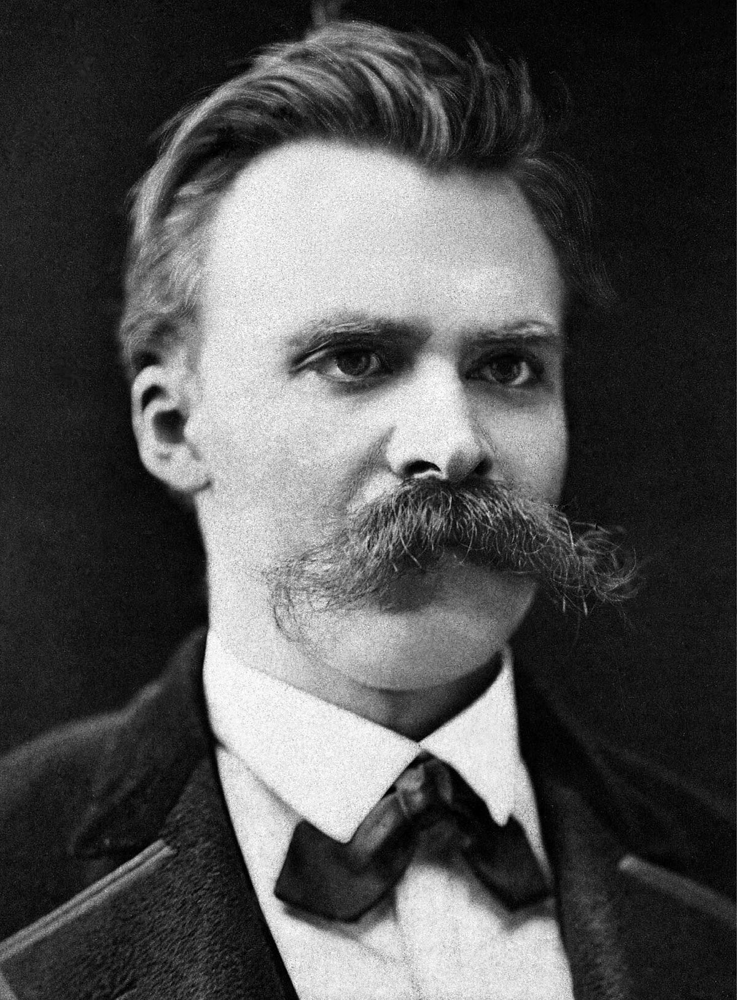

Philosophy is the rational, abstract, and methodical study of reality as a whole
or of the fundamental dimensions of human existence and experience. It comes
from the Greek word philosophia, which is translated through Latin to "love of
wisdom". A major component of the intellectual histories of many civilisations
is philosophical investigation. [1]
Philosophy is founded by people who overthink. People who refuse to settle for
the easy explanation. People who insist on complicating everything beyond
reason. The fact is that overthinking can sometimes produce some pretty
remarkable ideas about the world. There is this view that our existence as
humans is just a way for the universe to experience itself. I think that's
beautiful. I suppose you could say then that we were always meant to ask these
questions.
One of the three greatest thinkers in the history of Western philosophy,
together with Plato and Aristotle, Socrates was an ancient Greek
philosopher who lived in Athens in the fifth century BCE. He was revered by
his followers for his honesty, self-mastery, deep philosophical
understanding, and formidable argumentative skill. He was the first Greek
philosopher to explore ethical issues seriously. He had such a profound
impact on the subsequent development of ancient philosophy that the
philosophers who came before him are now known as the "pre-Socratics". [2]
The only life worth living is a good life.
----->
I can only live a good life if I really know what
"good" and "evil" are.
----->
"Good" and "evil" are not relative; they are absolutes
that can only be found by a process of
questioning and reasoning.
V
In this way, morality and knowledge are bound
together.
<-----
An unquestioning life is one of ignorance without
morality.
<-----
The life which is unexamined is not worth living. [1]
What precisely does the examination of life entail? For Socrates, it
involved challenging the meaning of fundamental ideas that we employ on a
daily basis but have never given much attention to, thereboy exposing their
true significance and our knowledge or ignorance. According to his beliefs,
virtue is "the most valuable of possessions" and nobody genuinely wants to
do evil. Anyone who commits evil acts would be acting against their
conscience and would feel uneasy as a result. As we all want to be at peace
with ourselves, we would not voluntarily perform evil actions. He believed
that evil was committed due to ignorance and a lack of wisdom. From this he
concluded that "there is only one good: knowledge; and one evil:
ignorance." [1]
The effect of Socrates' philosophy is something that is felt virtually
everywhere in the modern world, yet very few people seem to realise it. I
think this is really ironic because the crux of his beliefs was to question
everything. Knowledge can never be taken for granted. Socrates was truly a
thinker way beyond his time, and it is really worth examining why his works
remain relevant to this day.
René Descartes was a French mathematician, scientist, and philosopher who
was born in La Haye, Touraine, on March 31, 1596. He is widely recognised
as the founder of modern philosophy because he developed the first modern
version of mind-body dualism and encouraged the development of a new
science based on experimentation and observation. He rejected apparent
knowledge from authority, the senses, and reason by applying a unique
system of methodical doubt. He established new epistemological foundations
based on the intuition that he exists when he is thinking, which he
articulated in the dictum "I think, therefore I am". He created a
metaphysical dualism that makes a sharp distinction between mind, the
essence of which is thinking, and matter, the essence of which is extension
in three dimensions. [3]
An evil demon may be making me believe
things that are false.
----->
There is nothing of which I can be certain.
----->
But when I say "I am; I exist", I cannot be wrong
about this.
----->
An evil demon could try to make me believe this only
if I really do exist.
----->
I am thinking, therefore I exist. [1]
Descartes employs what is referred to as "the method of doubt" to
demonstrate the stability and endurance of his ideas, which he considers to
be two crucial indicators of knowledge. Descartes' goal is to demonstrate
that knowledge may be attained even if we begin with the most skeptical
position possible, doubting everything. [1]
In case it wasn't clear, René Descartes revolutionised epistemology. His
approach to proving existence follows a very clear mathematical structure.
As if solving an equation, Descartes begins by declaring a singular
powerful "axiom": "I think therefore I am". His highly systematic manner of
building up a philosophical foundation from scratch completely blows my
mind. He even invented the Cartesian coordinate system! I think René
Descartes is the coolest philosopher.
Friedrich Nietzsche
"Man is something to be surpassed."

"Friedrich Nietzsche", by Friedrich H. Hartmann, under public domain
"God is dead. God remains dead. And we have killed him. How
shall we comfort ourselves, the murderers of all murderers? What was
holiest and mightiest of all that the world has yet owned has bled to
death under our knives: who will wipe this blood off us? What water is
there for us to clean ourselves? What festivals of atonement, what
sacred games shall we have to invent?"
Above is a picture of the 19th century German philosopher,
Friedrich Nietzsche, as well as a quote which in my opinion sums up his
overall ideology perfectly.
Friedrich Nietzsche was born in Röcken, Saxony, Prussia (Germany) on October
15, 1844. He was a German classical scholar, philosopher, and cultural
critic who rose to prominence among modern thinkers. Generations of
theologians, philosophers, psychologists, poets, novelists, and playwrights
were greatly impacted by his efforts to expose the motivations underlying
conventional Western religion, morality, and philosophy. Despite his strong
opposition to nationalisatiom, antisemitism, and power politics, fascists
eventually used his name to further the very causes he detested. [4]
Christianity says that everything in this world is
less important than that of the "next" after death.
----->
It says we should turn away from what seems
important in this life, and try to transcend it.
----->
But in doing this we turn away from life itself.
----->
Christianity's idea of "man" undermines us.
----->
We must surpass this limiting idea. [1]
Nietzsche refers to this "revaluation of all values" as one of the main
goals of his philosophy, which aims to challenge all of the ways we are
used to thinking about ethics and the meanings and purposes of life.
Nietzsche asserts repeatedly that in doing so, he is laying out a
philosophy of cheerfulness that seeks to affirm life even it if contradicts
all we have previously believed about good and evil. According to him, a
lot of the things we consider "good" are actually means of limiting or
turning away from life. [1]
Friedrich Nietzsche is my favourite philosopher. I think he has a really
compelling way of expressing his ideology. The emotional effect he achieves
through his writings is so profound, I really wonder what it's like in his
shoes. He is a very misunderstood guy. I'm absolutely fascinated by
Nietzsche and the impact he has left on philosophy.
Other philosophers
Are there other philosophers you admire?
Tell me about them!
Sources
Weeks, M., King, P. J., Buckingham, W., Marenbon, J., Burnham, D., & Hill, C. E. (2024). The philosophy book. DK Publishing.
Epistemology is defined as the philosophical study of the nature, sources,
and boundaries of human knowledge. The field is sometimes called the theory
of knowledge, as its name is derived from the Greek epistēmē, which means
"knowledge," and logos, which means "reason." [1]
Aristotle once said that philosophy begins in a kind of wonder or
puzzlement. Like the majority of people, epistemologists frequently start
their speculations by assuming they know a lot. However, as they consider
what they presumably know, they find that it is far less secure than they
initially believed, and they even start to think that many of their firmest
views are questionable or even untrue. [1]
Epistemology is thus an attempt to reconcile the differences between what we
think we know and what we actually know. I personally like to think of it
as the study of how perception and reality affect each other. In this
context it may be instinctive to ask, what is reality? What is knowledge?
How can anyone truly know anything? In my experience the fun only starts
after you get over this initial existential crisis.
Ethics is defined as the study of what is ethically right and wrong, as well
as good and evil. Any philosophy or system of moral ideals or principles
can also be referred to by this name. [2] In other words ethics
is about what we as humans owe to each other. Living an ethical life means
being aware of your moral duties as a person and acting in ways that are
considerate to other people, because the very nature of being a human means
you are not in this life or world alone.
The main concerns of ethics are the nature of ultimate value and the
criteria by which human activities can be deemed right or wrong. Its
subject consists of the fundamental problems of practical decision making. [2]
Ethics is the philosophical field with the most contributors. In other words
it gets the most attention out of all the main branches of philosophy. And
rightfully so, because ethics literally dictates how each person should
live. What does it mean to live an ethical life? What are the duties and
obligations we must fulfill as citizens of a society? Is it even possible
to live ethically in today's world? Perhaps the first step of living
ethically is to bother asking these questions in the first place.
Normative ethics
Normative ethics is the area of ethics that deals with standards of what is
morally right and wrong. It involves the creation of moral principles that
have direct implications for human behaviour, institutions, and ways of
life. [3]
Consequentialism
Consequentialism, also called teleological ethics, is a doctrine that
actions should be assessed according to their consequences in order to
determine their morality. Classical utilitarianism is the most basic type
of consequentialism. It holds that an action is morally correct or
incorrect based on whether it optimises the universe's net balance of
pleasure over pain. [4]
Deontology
In philosophy, deontological ethics refers to ethical views that
emphasise the relationship between the morality of human actions and
duty. The word deontology is rooted in the Greek words deon, which
means "duty", and logos, which means "science". According to
deontological ethics, an action is morally good due to some aspect of
the action itself, rather than because the product of the action is
good. It holds that certain actions are morally obligatory regardless
of how they may affect the welfare of people. [5]
Virtue ethics
Virtue ethics is a method of approaching ethics that considers virtue -
often thought of as excellence - to be essential. Character traits that
are vital to human flourishing are the main focus of virtue ethics. It
somewhat deviates from the conventional division between
consequentialism and deontological ethics. While it agrees with
consequentialism that an action's morality is determined by how it
relates to an end that has inherent value, it more closely resembles
deontological ethics in that morally right actions are part of the end
itself rather than merely serving as a mean to an end. [6]
Aristotle believed that there were certain virtues of mind and
character, like courage or generosity, and you should try to develop
yourself in accordance with those virtues. [7] Virtue ethics
is the school of thought that I personally follow. To me being a
follower of virtue ethics means that you have a moral obligation to
constantly improve yourself to the best of your ability. In other words
self-improvement isn't just for the sake of yourself, it's also for the
sake of the people around you. The first step of accomplishing this is
gaining more knowledge about yourself, and then asking questions about
how you can work on your virtues. Hence virtue ethics is a
philosophical model that affirms Socrates' belief that knowledge is
bound to morality.
I think it is becoming increasingly more difficult to live ethically in our
world. There seem to be too many distractions and malignant factors keeping
us from behaving in ways that exhibit our truly compassionate and
empathetic selves. Paradoxically having access to every kind of information
all the time has led us to become less knowledgeable, less skeptical, and
less willing to be ourselves. But as individuals we simply have to try. As
humans we owe it to each other to live ethically.
Metaethics
Metaethics is the area of ethics that studies the nature, basis, and scope
of moral judgments, ideas, and values. It is more concerned with what it
means for an action to be right and if moral judgments are objective and
can be true at all than it is with which actions are right. It also looks
at what morality and other moral terms mean. By examining the underlying
presumptions of normative ethics, metaethics is a metatheory that functions
at a higher degree of abstraction than normative ethics. Generally
speaking, normative ethical theories are not directly evaluated by
metaethical theories. Metaethical theories can nevertheless have an impact
on normative theories by analysing their foundational principles. [8]
The ontological status of morality and the veracity of ethical ideals and
principles are major debates in metaethics. It investigates whether moral
qualities exist as objective characteristics separate from the human mind
and culture instead of being subjective constructs or manifestations of
cultural norms and personal preferences. [8]
Moral realism
According to moral realists, statements about what actions are morally
necessary or acceptable, as well as what dispositions or character
traits are morally virtuous or vicious (and so forth), are not merely
subjective preferences. Rather, they are objectively true or false
based on how well they match the facts of morality, just as historical
or geographic statements are true or false based on how well they fit
the historical or geographic facts. [9]
Moral relativism
Moral relativism is the idea that there are no unchanging moral
principles and that morality differs from person to person or from
society to society. [10] According to some moral
relativists, moral systems are designed to achieve specific objectives,
such as social coordination. This perspective holds that various
cultures and social groupings within a society develop distinct moral
systems in accordance with their disparate goals. [8]
Moral nihilism
Moral nihilists deny the existence of moral facts. Both the subjective
moral facts supported by moral relativism and the objective moral facts
supported by moral realism are denied by them. They think that the
fundamental presumptions that underlie moral claims are incorrect. This
leads some moral nihilists to believe that anything is acceptable. A
slightly different perspective highlights that moral nihilism is not
itself a moral stance about what is permitted and what is not but the
rejection of all moral positions. [8]
I struggle to decide on which of these three schools of thought resonates
most with me. All of them seem too extreme to genuinely believe in. I can
say that I lean most towards moral relativism, though the view that there
are absolutely no unchanging moral principles seems off. A moral statement
like "Slavery is wrong" is very clearly true to me. Hence I think I sit
somewhere between moral relativism and moral realism. I believe that
morality is mostly subjective but there are still absolute moral truths.
The trolley problem is a thought experiment first introduced by British
philosopher Philippa Foot in 1967.
You are driving a trolley when the brakes fail. On the track ahead of you
are five workmen you will run over. You can steer to another track, but on
that track is one person you'd kill instead of the five. What do you do? [1]
Approximately 90% of respondents to surveys on the trolley problem have
opted to kill the one and save the five. Respondents are far less likely to
be willing to sacrifice one life if the scenario is modified where the one
sacrificed for the five was a relative or romantic partner. [2]
The trolley problem is important because it has been used to explore the
applicability and validity of the doctrine of double effect and the
difference between causing harm and permitting harm. It has also been used
to make clear the shortcomings of consequentialist (e.g. utilitarian) and
deontological (rule-based) approaches in applied ethics. [3]
I would personally steer the trolley onto the other track and choose to kill
the one person as well, assuming everyone involved were strangers.
If the one person was someone I knew and the other five were strangers, I
would most likely freeze and watch the trolley ram into five
innocent people. This is in essence just a would-you-rather question but
its implications are so dynamic.
I think the trolley problem emphasises how people subconsciously have
personal biases whenever they make decisions. To most people choosing to
kill one over five is the obvious answer. However very interestingly when
the context changes we get radically diverse responses to the problem.
Let's explore some variations of the trolley problem!
What are some variations of the trolley problem?
The Fat Man
A trolley is speeding down a track toward five individuals just as it was
before. By placing something really heavy in front of it, you can block it
from passing beneath the bridge you are on. The only way to stop the
trolley is to push the overweight man next to you over the bridge and onto
the track, killing him to save the five. Should you proceed? [2]
When asked, most people choose not to kill the fat man in order to save the
five people. As a result, efforts have been made to identify a meaningful
moral difference between the fat man and the original trolley problem. One
distinction might be that in the first instance, hurting the one is merely
a consequence of moving the cart away from the five, and no damage is
intended towards anyone. In the second instance, however, hurting the one
is a necessary part of the plan to save the five. In essence, this solution
applies the doctrine of double effect, which states that while one may act
in a way that has negative consequences, it is unethical to intentionally
inflict harm, even for good reasons. Therefore in the original trolley
problem, as long as it is not intentional, killing one over five is
acceptable even if the harm to the innocent person was anticipated. [2]
The Fat Villain
This variation is similar to The Fat Man, with the added claim that the
fat man who might be pushed is a villain who is accountable for the
entire circumstance: the fat man was the one who tied five people to
the track and aimed a trolley toward them with the goal of killing
them. Most individuals are willing to push the fat man in this
variation. Pushing the fat villain to stop the trolley, in contrast to
the last scenario, could be interpreted as a form of self-defense or
retributive justice. [2]
The Transplant Problem
You're a doctor and you can save five patients. The catch is that you
have to kill one healthy person and use his organs to do it.
The transplant problem is very relevant and known in applied ethics,
particularly in medical ethics. The Hippocratic oath that doctors take
forbids them from doing harm. Although five people will die, doctors
generally agree that they cannot harm one innocent person to save them
and thus forsake their oath.
In American philosopher Judith Jarvis Thomson's "Killing, Letting Die,
and the Trolley Problem", she posits a question: "Why is it that Edward
may turn that trolley to save his five, but David may not cut up his
healthy specimen to save his five?" To answer this question it has been
proposed that there is a morally decisive difference between the two
cases. While Edward would unavoidably violate the one
person's right to control what is done to his own body if he redirected
the trolley, the surgeon would avoidably violate the
donor's corresponding right to control what is done to his own body if
he removed the donor's organs. [4]
As you can see, many philosophers have modified and used the trolley problem
as arguments for their respective theses since it entered philosophy almost
60 years ago. The trolley problem is just one of many many thought
experiments in ethics which serves as a way for us to investigate our own
moral impulses. Personally, the trolley problem is a reminder that in
philosophy there is no right answer. In life too there isn't an answer for
everything, but the mystery is part of the fun. The appeal of philosophy is
to indulge in introspection. In the words of Socrates, "I know nothing
except the fact of my ignorance".